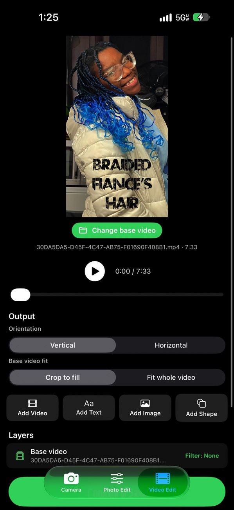
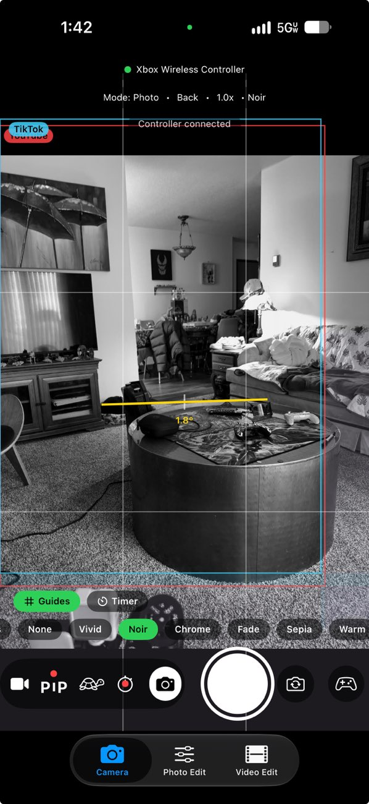
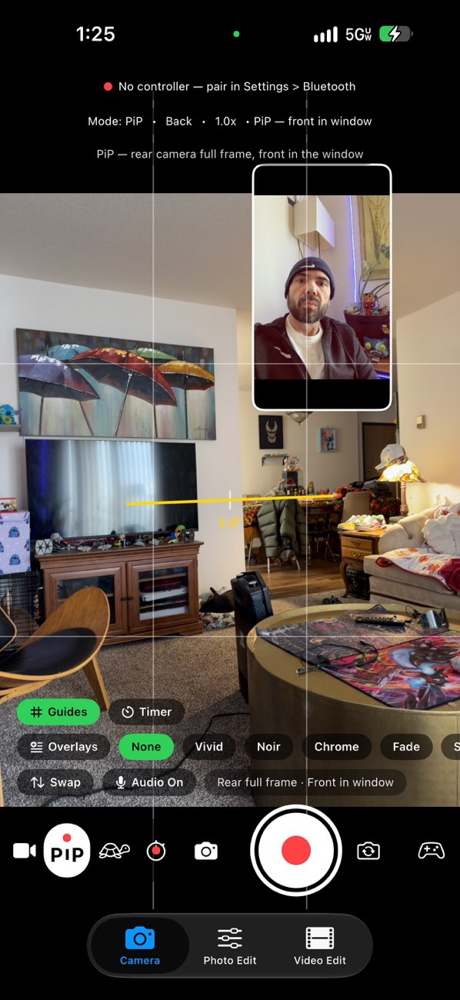
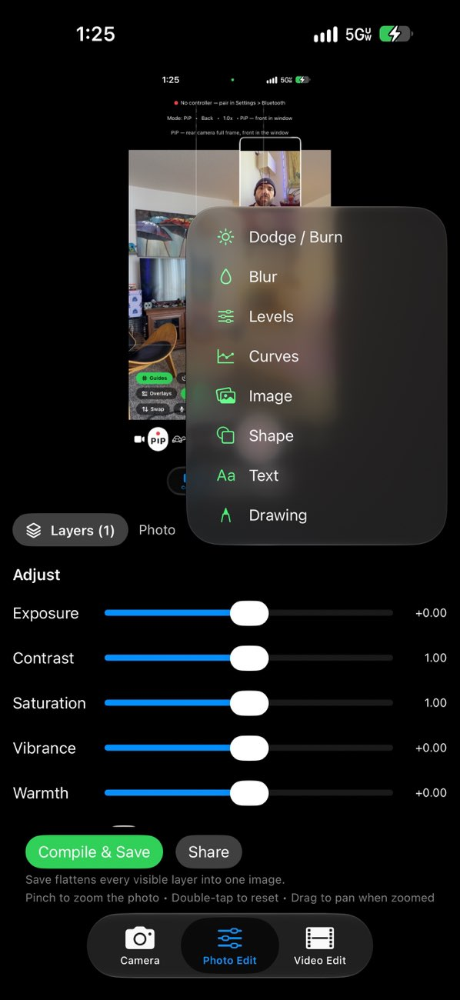
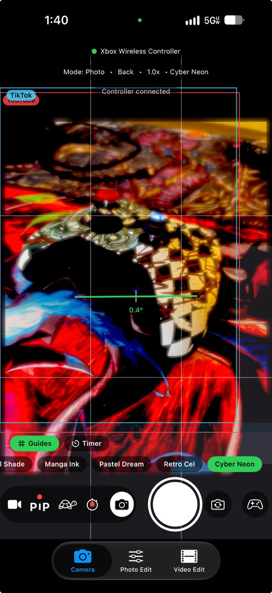
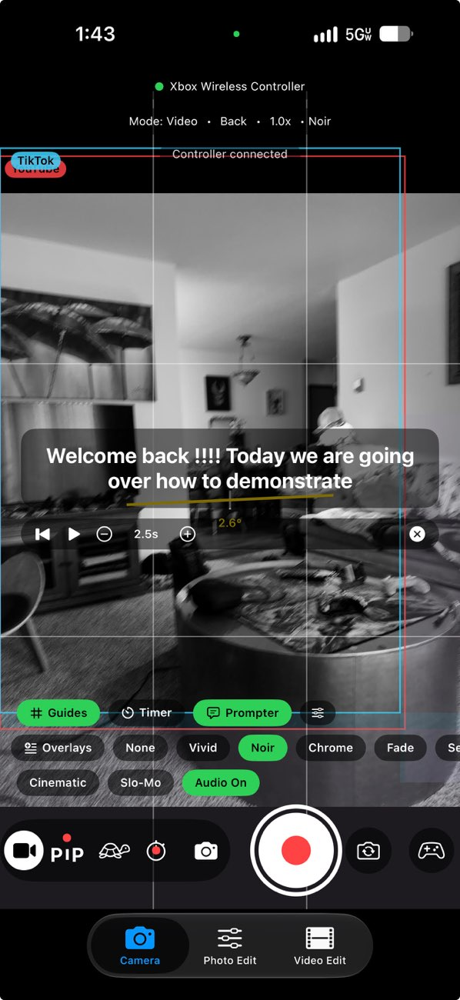
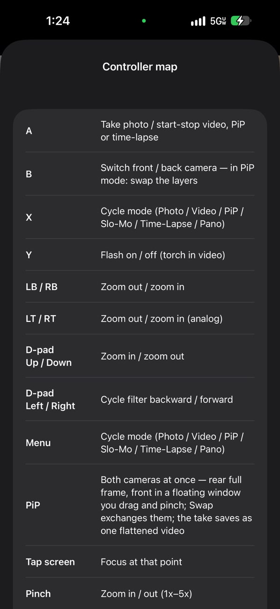
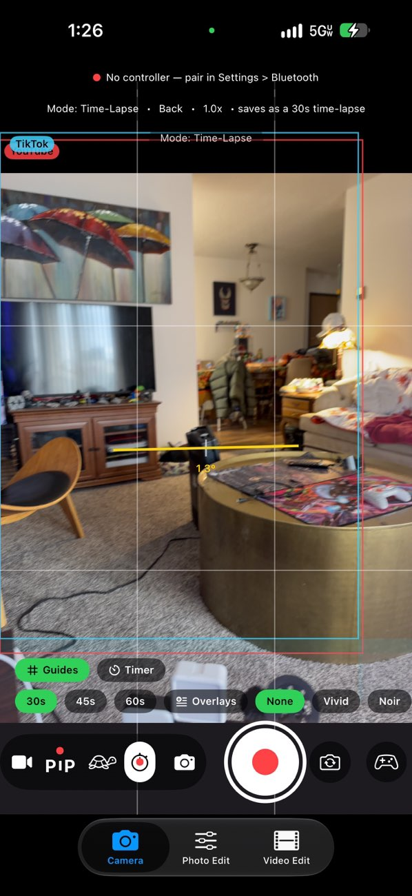

iControl Snap
Controller Camera & Prompter
On the App Store
Free · Pro one-time purchase $19.99 (launch price)
Film yourself without running back to the tripod. iControl Snap turns a Bluetooth game controller into a full camera control surface. Start and stop recording, switch cameras, change modes, cycle filters, zoom and lock focus — all from the controller in your hand, while the phone stays on the tripod.
Shoot your way
Photo, Video, Time-Lapse, Panorama and Slo-Mo modes, plus dual-camera PiP record. Filters run from clean (Vivid, Noir, Sepia) to stylized, including an on-device Anime look. Long-press AE/AF lock, a self-timer, and Rotate 90° round out the camera — and the built-in teleprompter keeps your script in front of you, with optional burned-in captions.
New — LiDAR 3D scan
On LiDAR-equipped iPhones, scan real objects into 3D models and export them as USDZ or OBJ. The Scan Area box scans only what's inside it — great for 3D-printing references. LiDAR scanning is free for everyone.
Edit in the same app
Photo and Video Edit tabs with multi-layer draggable overlays and a Layers editor. Overlays burn into the export, and finished videos can be sent straight to YouTube from the app.
Free vs Pro
Free with ads: core shooting, Panorama, the free filters, and LiDAR scan. Pro (one-time purchase) unlocks all Pro filters, Time-Lapse and the Edit tabs for good — no subscription. No account, no developer server; your media stays in your Photos library unless you share it.
Features
- Controller-first camera — record, switch cameras, change modes, cycle filters, zoom and lock focus from a Bluetooth game controller
- Five shooting modes plus PiP — Photo, Video, Time-Lapse, Panorama, Slo-Mo, and dual-camera picture-in-picture record
- Filters from clean to stylized — Vivid, Noir and Sepia free; Pro adds the full set, including an on-device Anime look
- Built-in teleprompter — with optional burned-in captions
- LiDAR 3D scanning (free) — scan objects into 3D models, export USDZ/OBJ, and crop with the Scan Area box
- Photo & Video Edit tabs — multi-layer draggable overlays, a Layers editor, and direct-to-YouTube sending
Screenshots







